Cozinhas e ilhas
Bancadas, ilhas em cascata e frontões que unem beleza e resistência no dia a dia.
Marmoraria em Contagem e região
Bancadas, ilhas e revestimentos sob medida, da escolha da pedra à instalação.
Marmoraria em Contagem
e região
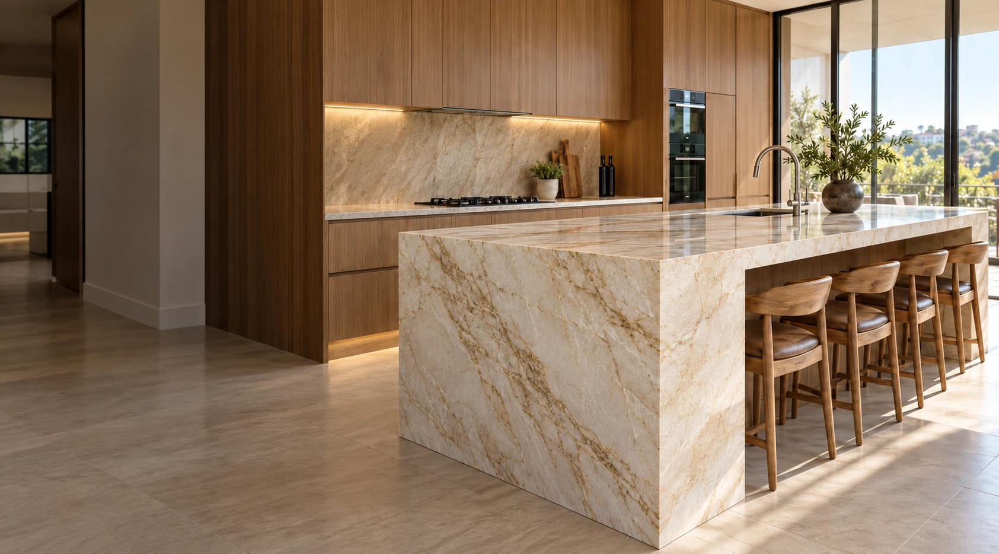
Atendimento local, com visita e medição no seu endereço.
Uma equipe acompanhando todas as etapas do seu projeto.
Quartzos, quartzitos, granitos, mármores, porcelanatos e lâminas.
Cada projeto merece uma pedra escolhida de acordo com o estilo, a funcionalidade e a proposta do ambiente. Confira algumas obras finalizadas pela equipe da Matos Stone, do recorte da cuba à instalação final.
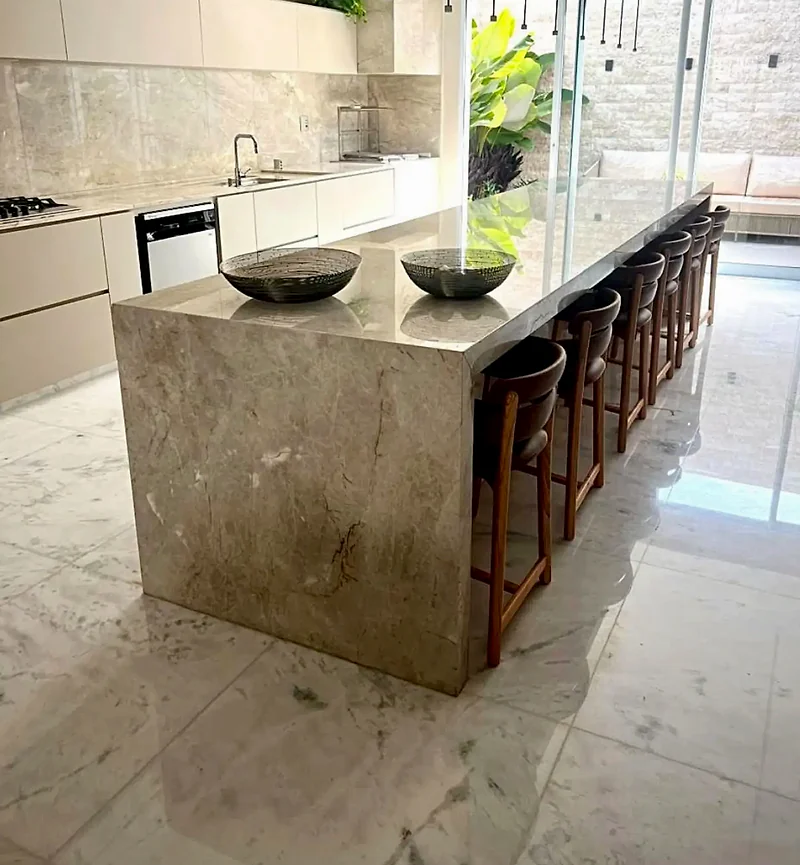
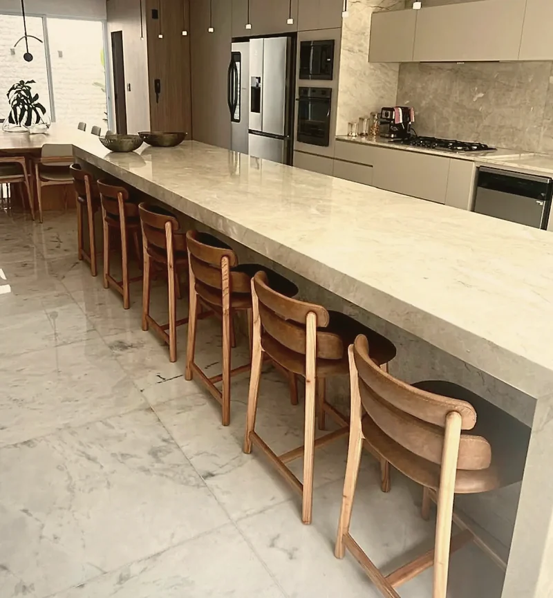
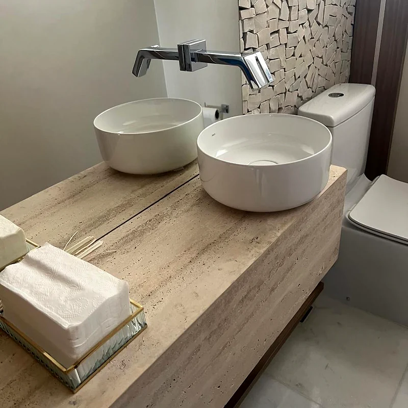
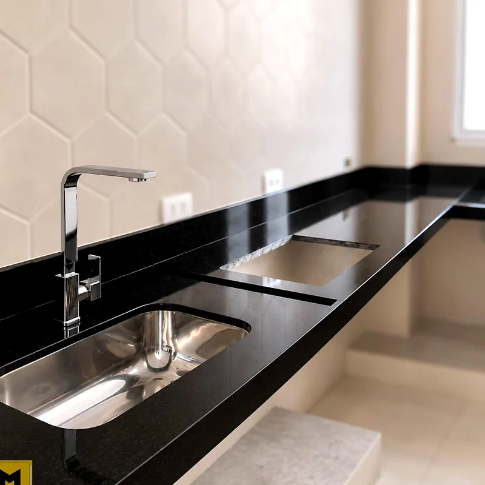
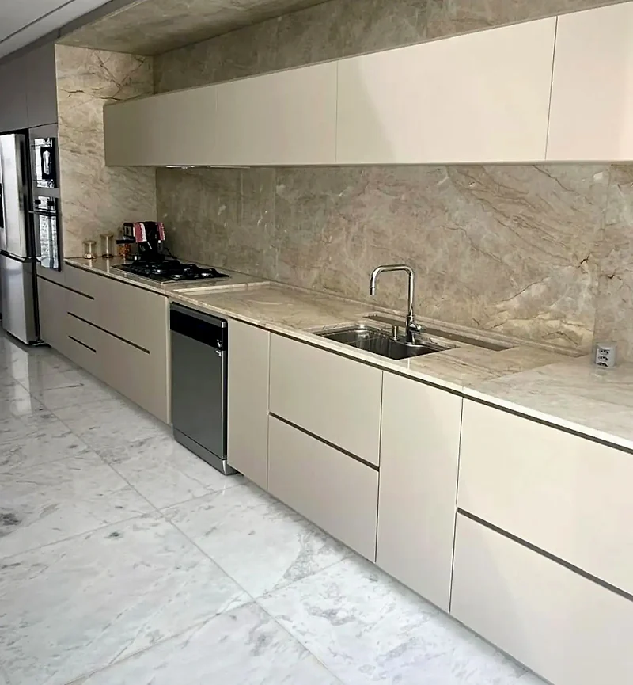
A escolha da pedra começa pelo seu dia a dia. Ajudamos você a encontrar o equilíbrio entre estética, uso e manutenção.
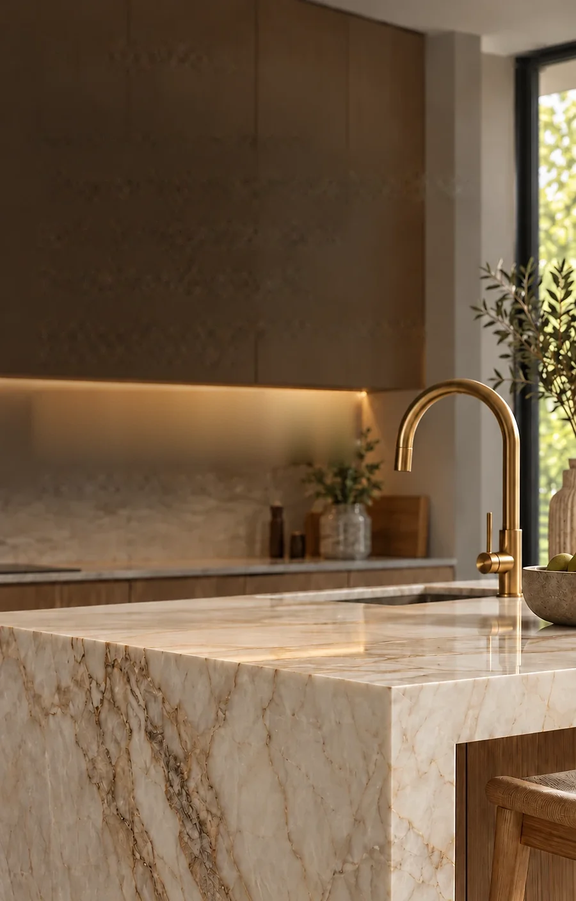
Da cozinha ao lavabo, cada peça é desenhada a partir do seu espaço e do seu jeito de usar.
Bancadas, ilhas em cascata e frontões que unem beleza e resistência no dia a dia.
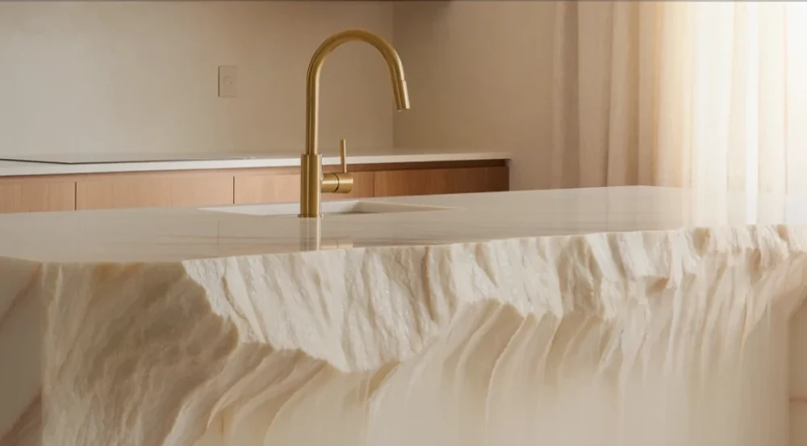
Cubas esculpidas na própria pedra e bancadas que deixam o ambiente leve e minimalista.
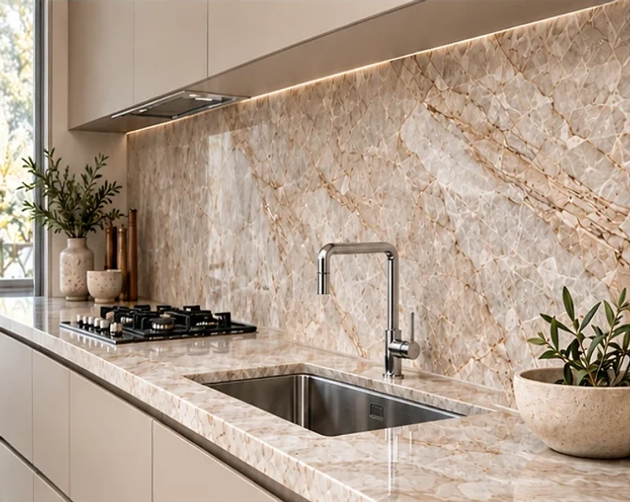
Bancadas, frontões e ilhas para receber, com pedras que suportam calor e uso intenso.
Desde rochas convencionais até opções de alto padrão, escolhidas chapa a chapa.
Resistente como o granito e com os veios marcantes de um mármore, o quartzito é a escolha certa para ilhas, bancadas e revestimentos que precisam de beleza e durabilidade ao mesmo tempo.
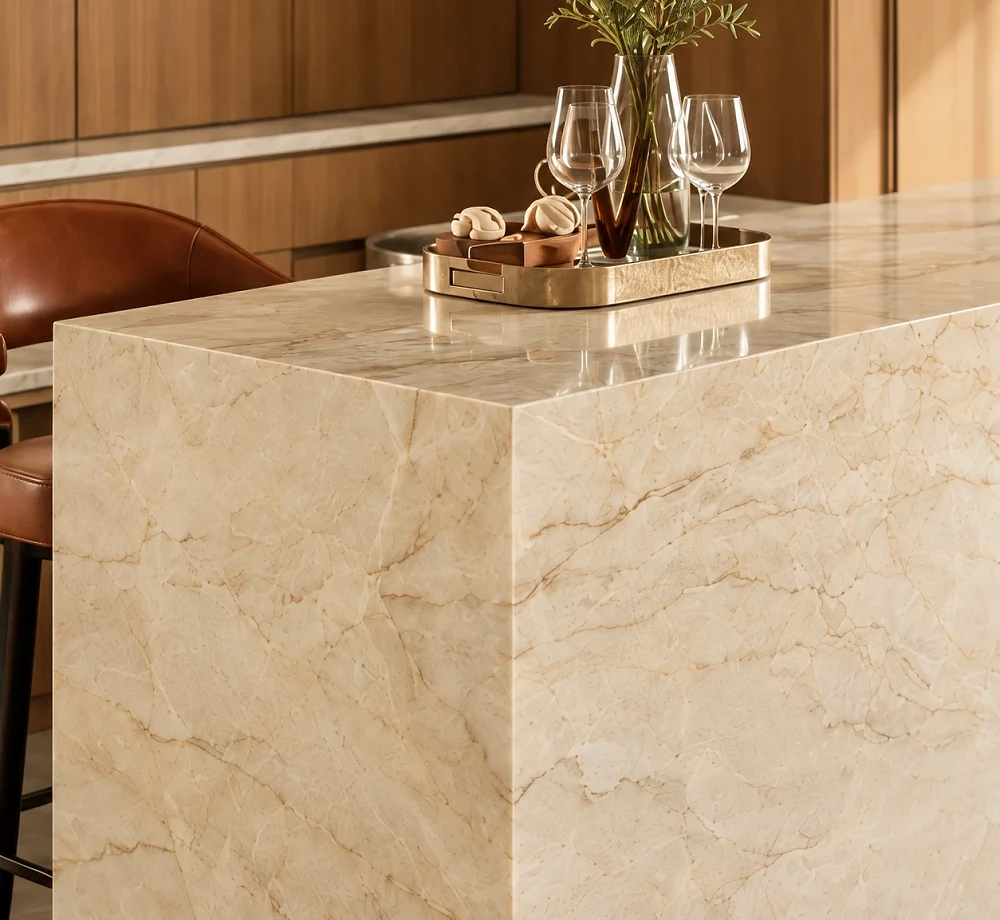
Dureza alta, ótima resistência ao calor e fácil manutenção. Do preto profundo aos tons claros, o granito vai bem em cozinhas, áreas gourmet e bancadas de uso intenso.
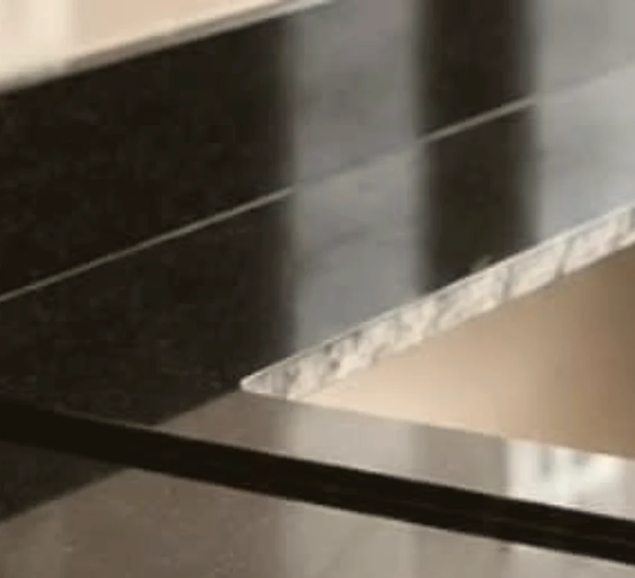
Tons claros e a textura natural de poros e linhas trazem aconchego e personalidade para lavabos, banheiros e paredes de destaque.
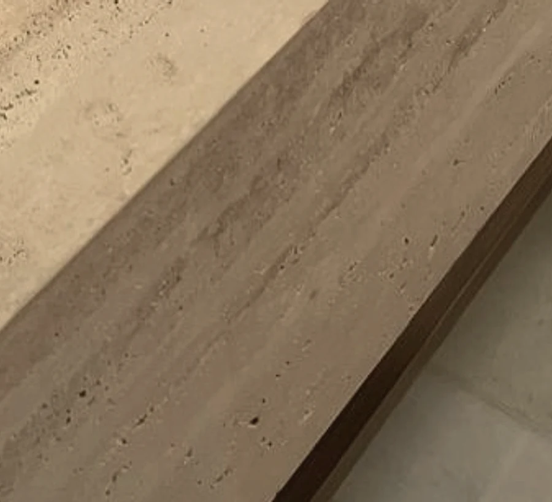
Um processo claro, do primeiro contato ao acabamento.
Conversamos sobre o projeto, o ambiente e o momento da obra para entender o que precisa ser feito.
Apresentamos materiais, acabamentos e detalhes, com um orçamento claro para cada etapa.
Conferimos medidas e encontros com marcenaria, louças e metais no ambiente.
Detalhamos recortes, encaixes e acabamentos para aprovação antes do corte.
Cortamos e acabamos cada peça, com conferência de qualidade em cada etapa.
Instalamos as peças e fazemos a conferência final com você, ambiente por ambiente.
Cada projeto é único. Por isso, nosso trabalho começa entendendo o que você, seu arquiteto ou sua construtora precisam.
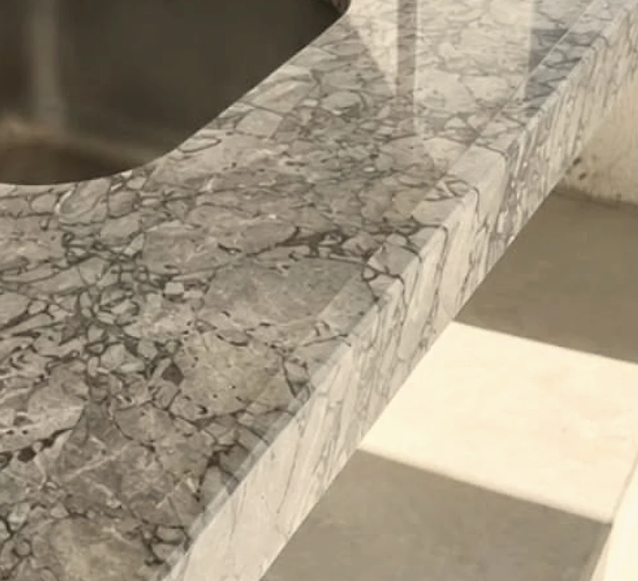
A Matos Stone, também conhecida como Matrix Mármores & Granitos, atende Contagem e região transformando pedras naturais e tecnológicas em bancadas, ilhas, lavatórios e revestimentos sob medida.
Trabalhamos com quartzos, quartzitos, granitos, mármores, porcelanatos e lâminas, do convencional ao alto padrão, e orientamos você na escolha do material certo para cada ambiente.
Para arquitetos e construtoras, fazemos a compatibilização técnica: medição, detalhamento e instalação pensados para o projeto chegar bem à obra.
Visite a Matos Stone em Contagem e conheça de perto as pedras e os acabamentos para o seu projeto.
Av. Nossa Senhora da Conceição, 486
Tijuca · Contagem/MG
Fale agora com a equipe da Matos Stone pelo WhatsApp e receba a orientação certa para o seu ambiente.
Solicite um orçamento